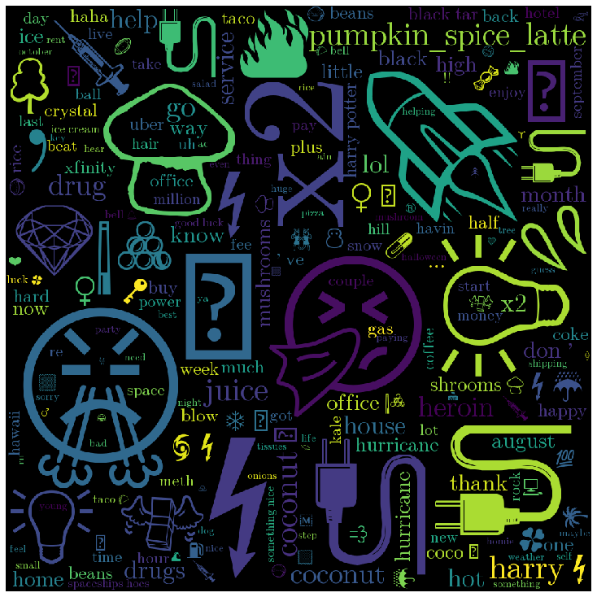

Venmo: Analyzing Public Information
Introduction and motivation of the problem
Venmo is a mobile payment service owned by PayPal that allows users to transfer funds. By default, Venmo makes transactions public available for anyone to see. This is a privacy concern. Public transactions can contain information that users might not want to share and are doing so unknowingly. These transactions contain information such as usernames, dates, and notes in which people can add messages to identify what the payment is for. These transactions expose personal information. Public transactions present a problem in which the transactions can be linked to and followed closely to obtain data on a person.
Background
Venmo dataset is publicly available for anyone to analyze without even an API key which makes the Venmo user’s data highly vulnerable to cyber-attacks. There are some very valuable data available for any attacker conducting OSINT research.
The research/analysis done in the past is usually oriented more towards highlighting Venmo’s privacy policy and how the data is easily available for anyone to download and access.
In June of 2018, a Berlin-based researcher downloaded almost 210 million Venmo transactions to study the possible threats raised by Venmo’s claim of prioritizing the social networking aspect of the company over its user's privacy. Following this study, Venmo made certain changes to its API to limit the pace at which the data can be gathered.
Recent studies have shown that it is possible to extract nearly seven million transactions over a period of seven months (July 2018 - Feb 2019), which is 57,600 transactions per day which calculates to around 40 transactions per minute. This particular study raised several questions about Venmo’s privacy policy and how the application’s social feed structure is one of its biggest draws and security concerns at the same time.
We are interested in studying Venmo to understand the impact of social networking on payment processing (which should be done securely). Our study examines both the social and technical vulnerabilities by studying nearly seven million transactions made with Venmo. We aim to find the flaws that allows the user's personal information to become vulnerable.
Our methods involve pattern recognition to find the trends in the emoji and text in the “note†section of the app that indicates purchase or selling of illegal substance as well as identifying the most common emoji and text used in transactions.
Description of the Dataset
The dataset contains over 7,000,000 public Venmo transactions scraped from the Venmo public API. Anyone can make a request to the Venmo public API and receive the public transactions exposed at the time. This data was collected from July 2018 - October 2018 and from January 2019 - February 2019 and was put into a bson file found on Github. This bson file is the collection of transactions. Each transaction contains information such as the transaction ID, the date of the transaction, names and usernames of the user paying as well as the user receiving the payment, the note, comments on the transaction from other users, mentions of other users, users that have liked the transaction, and the type of phone used for the transaction.
Analysis Methodology
In order to analyze this large amount of data, we tried a variety of different Python packages to try to analyze our data. We have also used Tableau to understand the distribution of payment categories within the dataset. We tried spark, pymongo, pandas and a few other methodologies. Spark provides sql-like queries which is much more convenient for aggregation queries. However, spark also tried to load the whole dataset in memory and crashed both the mongodb server and the python program. The pymongo package suffered inconsistent performance with mongodb, often crashing over different or even the same queries. The pandas package worked reliably to process data in conjunction with using mongoexport to export data as a csv file from the database.
The final method for data extraction followed the following procedure:
1. Write a js mongo db query to extract a view that contains the relevant fields for analysis.
2. Use mongoexport to export the fields from mongodb view to csv files.
3. Load csv files on pandas dataframe for the analysis.
With privacy-sensitive data such as these Venmo public transactions, it was imperative that we performed our analysis in a way that could be presentable without allowing users to be tracked through their names or their usernames. Instead, we opted to use ID numbers that would not disclose any personal information such as their names or usernames. If we had used names and usernames, malicious actors could use our research to perform malicious attacks and gather information on specific people. We wanted to prevent that and anonymize all of our research so as to provide analysis that could be used without targeting specific users which was successfully done through the use of ID numbers.
Preliminary Analysis
We begin our analysis by examining the payment distribution in different categories to analyze user’s participation in different social and financial activities. We have gathered the data from July 2018 to Feb 2019 and plotted the distribution of the same.

From the first plot we can infer that venmo app is used most frequently during the months of August and October. The second plot gives the distribution of per day use of Venmo. From this plot we can infer that the peak hours for app usage are during the evening and night times. Users are not very active during the hours in the early morning and close to noon.
To examine the social involvement of Venmo users, we have plotted the distribution of the “likes”, “comments” and “mentions” feature of Venmo.
From the above plots, we can deduce that only 0.1% of all the users are utilizing the “like†feature of 0.014 % of all users use the “comment†feature and 0.1 % uses the “mention†feature. We can draw a significant conclusion from the above that the social involvement of users is not prevalent in Venmo.
Payment Types and Dynamics Analysis: payment distribution is analyzed by utilizing the “note†section of the Venmo app and classifying the payment types based on text/emojis. We analyze the number of words in the messages for all users.
The above plot gives us the distribution of messages with less than ten words. From the above plot we can deduce that around 98 % of all users use less than ten words in the messages section, from this we can deduce that emojis are very helpful in classifying the payment transactions.
Next, we manually analyze the dataset for keywords and emojis to determine the top or key payment categories. Seven key categories are thus identified.
Food and Drinks: groceries, liquor, dining, etc.
Transportation: gas, parking, airfare, etc.
Home/Utilities: rent, cleaning, electricity, phone, etc.
Entertainment: movies, music, sports, etc.
Basics: gifts, medical, clothing, etc.
Potentially Illegal Substances: drugs
Third-Party: bills, payments made with a third-party app such as splitwise.
We use a list of keywords and emojis for each category to classify transaction type. For e.g. we have used the keyword “lyft†under transportation.
Food & drinks: food, drinks, dinner, pizza, coffee, 'ğŸ’', '🍔', '🍕', '🍷', '🍻', '🍴' etc. Entertainment: music, movies, sports, '🎧', '🥳', '🎬', '⛷', '🎡', '🎪', etc. Transportation: uber, lyft, cab, tickets, parking, '🏍', '🛩', '🚗', '🚕', etc. Home/utilities: house, rent, phone, cleaning, '🏍 💸', '📞', '🔌', '📡', '📱💸', etc. Basics: gifts, medical, clothing, '👗', '👠', '🤰', 'ğŸ’', etc. Illegal Substances: drug, weed, smoke, marijuana, '🍀', '🐉', '💉', '💊', '🔌', '🥧', etc. 3rd Party: bills, payment, Tab!, splitwise.com, dues, deposit, '💵', etc.
The above plot gives us the distribution of the key payment categories. We have been able to classify around 47 % of our data into one of the categories. The most popular category is Food and Drinks followed by entertainment and third party.
Current Analysis and Results
a. Vulnerabilities
We begin our analysis by examining the vulnerabilities in the Venmo app. There are three privacy settings for Venmo transactions.
1. Public (transactions are visible to everybody, users and non-users)
2. Private (visible only to the two parties)
3. Friends (visible only to the friends of the two parties)
However, the transactions visible to friends can be made visible to everyone by a call contained in the Venmo API. Every transaction in Venmo is sequentially ordered via a payment id. A payment id is a number belonging to a “publicâ€, “friends†or “private†transaction. An attacker (not a friend to the payer or the payee) can initiate a GET request to if the payment id corresponds to a friends-only or public transaction. This returns a JSON response which contains information about all the transactions corresponding to the paymentid.
Our observations suggest that Venmo does not provide any technical bound to prevent a social engineering attack. It allows any money transactions between any Venmo user whether they are on each other’s friends list or not. Moreover, the process of accepting a charge is similar to a friend and a non-friend. The interface for a pending charge request does not make the distinction as well. This makes it very easy for an attacker to trick the user into accepting the charge. An attacker can change his name and profile picture to someone’s in the victim's account and charge a false payment. If the victim does not recall the username, there is no other way to distinguish the attacker.
Since Venmo allows a very easy interface to change the name and profile picture, this raises questions about the vulnerabilities due to prioritizing the aspect of social media on the app. This attack can also be carried out if the attacker creates a fake account with the same name and profile picture as a friend. Since it is very feasible to collect the details of the transactions through a GET method, an attacker can study the transaction patterns between various users.
b. Patterns/Trends in Notes
The most interesting aspect of Venmo is that it is not only a money transferring app but also a social media platform. Venmo allows its users to drop notes, share likes and comments on each transaction. These messages are public by default and imposes threat on user’s privacy. We have made the following observations upon analyzing the transaction note section of the dataset. Emails and accounts were not exposed through the public transactions API. We did a deep dive on specific drug term usage and found that the most common words included ‘drug’ with over 4,400 references, ‘weed’ with over 1,600 references, ‘meth’ with over 790 references, ‘heroin’ with over 370 references, and ‘lsd’ with over 70 references. Venmo was also used mostly by iPhone users compared to Android users.
We performed an analysis on the most common words and emojis used that did not include stopwords. The five most common words were ‘food’ with 125,000+ references, ‘uber’ with 65,000+ references, ‘thank’ with 64,000+ references, ‘rent’ with 54,000+ references, and ‘thanks’ with 44,000+ references. The five most common emojis were 🍕with 65,000+ references, 🏍 💸with 56,000+ references, ⛽with 42,000+ references, ❤️with 37,000+ references, and 🏈with 37,000+ references.
c. Categories of Transactions (Clustering)
We used k-means clustering to split the notes into different categories. The modules used for this clustering were: scikit-learn for the k-means algorithm, and gensim’s Word2Vec function in order to extract feature vectors that were used in the aforementioned algorithm. The clustering was run on a sample (250,000 transactions) of the entire dataset. The following table contains all clusters with a meaningful classification.
These categorizations were all dependent on the cluster count- too little clusters and word-clouds are too general and vague, too many and there will be pointless categorizations. Another caveat regarding the clustering algorithm is that emojis tend to be grouped up into their own clusters- that’s why categories like Food/Drinks appear twice. We used the results of the clustering to also generate word-clouds of the most common words in each category of transaction. Here’s a sample word-cloud:
d. Emoji Usage
Some of the data is skewed by the messages containing emojis. Venmo users are mostly young adults who use emojis frequently to describe the transaction. Similar to the text messages, emojis make it feasible for an attacker to study the transaction patterns between various users. If a Venmo user reimburses another user for a Domino’s pizza on a regular basis, an attacker could study the transaction patterns and tailor a fake Domino’s promotion in order to charge a false payment to the victim.
Our studies suggest that these emojis are a mechanism for users to create their own codes (1). Paying or demanding an illegal substance may be coded with an emoji. The “spaceship†emoji is usually used by young adults to indicate the potency of the drug. The plug emoji refers to a demand for a supply from a drug dealer. Pie emoji is often used to indicate the drug is required in large amounts, the fuel pump emoji is often used by teens to indicate that they are “gassed†or intoxicated. The emojis are either the cues to decipher the hidden message or indicate the original meaning. A fuel pump emoji could also represent a gas bill. Additionally, these messages are taking place in a public platform and the coding could be a playful or social attempt at gaining more followers or friends.
We wanted to confirm that these emojis were indeed being used as codes for illegal substances, so we only looked at transactions that contained keywords (drug, heroin, coke, etc.) and contained these suspicious emojis. We narrowed it down to 2626 transactions- there were still notes that seem innocent, so we used clustering to obtain a list of transactions (448 notes) that contains mostly suspicious notes. Here it is as a word cloud:

Discussion and Implications of the results
The API call described above should be improved/modified so that it does not reveal transaction details to a non-Venmo user, or a Venmo user that is neither the payer nor the payee.
Venmo should notify a user upon accepting or making a payment to a non-friend Venmo user. For people using Venmo, it is highly recommended to set the privacy settings correctly to ensure that the public cannot see transactions. Otherwise, the public could see your transactions and perform some sort of information gathering from other social media and gain insight into your financial transactions. Venmo says that they keep transactions public by default to promote itself as a social media platform as well, but our studies have shown that about 0.1% of the public users are actually using the social media functionalities such as likes, comments, and mentions.
Thus, it demonstrates that Venmo is not doing so well in that regards and should consider making Venmo transactions private by default to further protect users.
Conclusions and Possible Fututre Work
In this study we have analyzed the overall security aspect of Venmo and how social networking impacts the privacy of Venmo users. We have discussed about the vulnerabilities of the UI interface of the app as well as the API calls. The aspect of social networking is an integral part of the app which also distinguishes it from other competitors in the same field. We have examined the count of different terms and emojis used for payment transaction regarding illegal substances or any sort of illegal purchase as well as general use for transactions. The top use case for Venmo transactions seem to be related to food and drinks. An important thing to note is that these transactions require the use of a note, so it is difficult to tell whether or not the user is actually paying for what his/her note says. Without a ground truth, we cannot say for sure that these are the number of users who are paying for food/drinks, drugs, etc. but we can say that these are the possible number of users who are paying for these sorts of transactions.
Note: our work is split into different branches. For example, the “analysis” branch contains the information presented in the Patterns/Trends in Notes section, while the “note-analysis” branch contains the information regarding clustering on the notes.